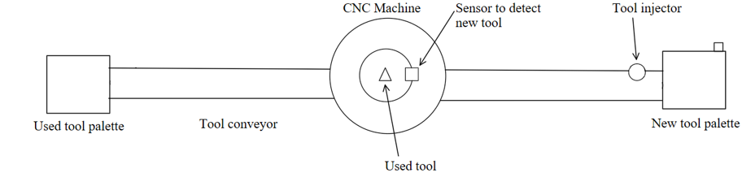
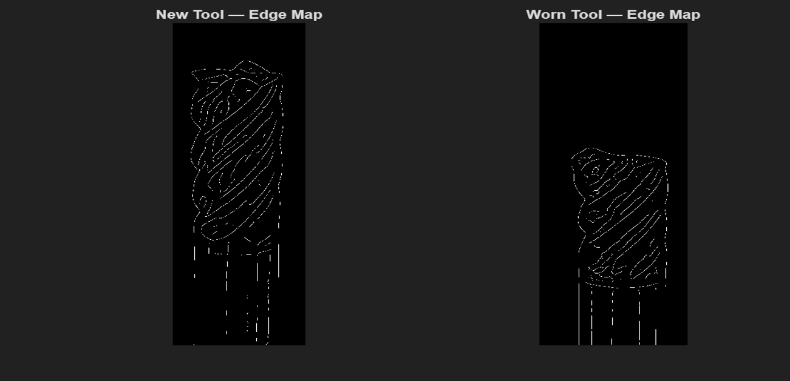
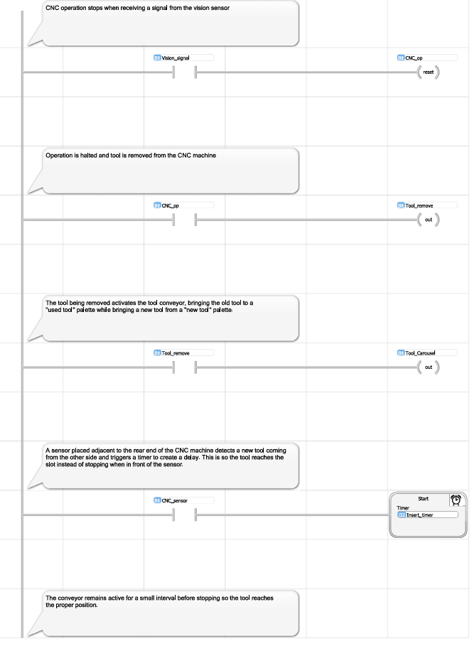

The Problem
In CNC manufacturing, cutting tools degrade with use. A worn tool produces inaccurate cuts, damages workpieces, and can cause downstream equipment failure. The traditional response involves scheduled replacements and manual checks. But this is wasteful on both ends: fixed-interval changes discard tools that still have life left, while manual inspection introduces human error, fatigue, and labor cost.
The question this project set out to answer was this: can the inspection and replacement process be fully automated using a vision detection system connected to a PLC controlled tool changer?
How the two systems connect
The design splits into two components that work in sequence. The vision system handles detection; the PLC handles the physical response. Neither can operate without the other since the output of the MATLAB script is the input trigger for the PLC sequence.

Reading Tool Wear through Edge Maps
The MATLAB vision module works by comparing the edge geometry of a tool tip before and after a machining cycle. An edge detection algorithm extracts the tool's boundary as a binary pixel map. As a tool wears, material is lost from the cutting edge — this shows up as a measurable reduction in the number of detected edge pixels.
When the pixel loss exceeds a 4% threshold, the module flags the tool as worn and outputs a digital signal to the PLC via a Modbus TCP connection. Below the threshold, machining continues uninterrupted. As physical CNC tools were not available, the system was validated using images of new and worn end mills. These served as a practical workaround that demonstrated the core detection logic cleanly.

% --- 1. Load Images --- img_new = imread('tool_new.jpg'); img_worn = imread('tool_worn.jpg'); g_new = rgb2gray(img_new); g_worn = rgb2gray(img_worn); % --- 2. Extract Tool Edge --- E_new = edge(g_new, 'canny', .02, 8); E_worn = edge(g_worn, 'canny', .02, 8); % --- 3. Compute Wear --- orig_pixels = sum(E_new(:)); current_pixels = sum(E_worn(:)); missing_pixels = orig_pixels - current_pixels; wear_pct = missing_pixels / orig_pixels; fprintf('Tool Wear Percentage = %.2f%%\n', wear_pct * 100); % --- 4. Threshold Check --- TH = 0.04; % 4% wear threshold PLC_OUT = wear_pct > TH; if PLC_OUT disp('TOOL CHANGE REQUIRED'); else disp('Tool OK'); end % --- 5. Send Signal to PLC via Modbus --- try plc = modbus('tcpip', '127.0.0.1', 502); write(plc, 'holdingregs', 0, uint16(PLC_OUT)); disp('Signal sent to OpenPLC (MW0).'); catch ME disp('Could not connect to OpenPLC Modbus server.'); disp(ME.message); end % --- 6. Visualization --- figure; subplot(1,2,1); imshow(E_new); title('New Tool Edge Map'); subplot(1,2,2); imshow(E_worn); title('Worn Tool Edge Map');
Automating the Replacement sequence
Once the vision module outputs a "Tool Worn" signal, the PLC takes over. The ladder logic program — written in OpenPLC — coordinates the full tool-change sequence across 9 rungs, handling everything from halting the machining cycle to resuming operation with a fresh tool.
A sensor adjacent to the CNC machine detects the incoming replacement tool and triggers a timed insertion delay, ensuring the tool reaches its slot rather than stopping short. An alarm light notifies the operator when the new-tool palette runs low — the only human intervention the system requires. This project was completed in collaboration with Karan Keshav, with the PLC logic and system integration developed jointly.

What the System demonstrates
Vision-Based Wear Detection
The reduction in detected geometry between a new and worn tool is visually and numerically distinct, giving the threshold check a clear signal to act on.
End-to-End System Integration
The Modbus TCP link between MATLAB and OpenPLC demonstrates how a software detection layer can directly trigger physical hardware responses.
Labor & Quality Implications
Full automation of the inspection and replacement cycle removes the need for manual checks, reduces scrap from worn-tool errors, and prevents downstream equipment damage, thus addressing the core inefficiencies that motivated the project.
Future Work
The current system was validated conceptually without much physical hardware. Next steps would include testing with actual CNC tools, calibrating the wear threshold against real machining data, and automating the tool palette replenishment cycle.
Project Materials
Full report and PLC ladder logic file available below.